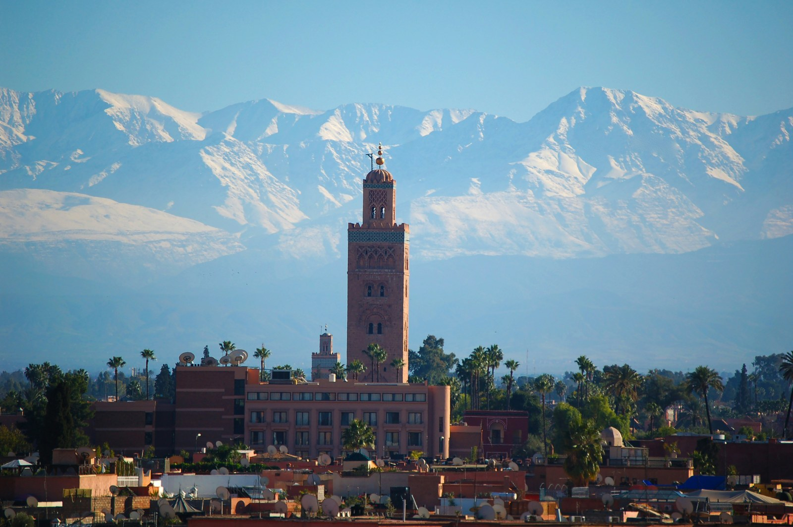

⚡ Tour Highlights & Selling Points
- The Only Sunset Free Tour in Marrakech: Timed specifically to conclude at sunset over Jemaa el-Fna as the call to prayer rings out from the Koutoubia and the square transforms into a culinary theater.
- Official Licensed Local Guide: Led by a fully accredited English-speaking Moroccan guide (*guide agréé*) carrying official tourism ministry credentials.
- 100% Zero-Shop-Stop Guarantee: No pressurized commission carpet shops, herbalist traps, or forced shopping. Pure authentic culture and history.
- Living Craft Quarters: Watch copper lantern makers, wood turners, and wool dyers at work in their traditional medieval workshops.
- Insider Jemaa el-Fna Orientation: Learn the centuries-old story of the *Halqa* performers and master essential safety, etiquette, and navigation skills.
Why Sunset, and Why This Free Tour?
During the midday heat, the narrow alleys of the Marrakech Medina can feel overwhelming. Most historic monuments such as Le Jardin Secret, Bahia Palace, and the Saadian Tombs close by 6:00 PM. We turned this into the tour's unique signature: this is the only free walking tour that concludes at golden hour, just as the sun sets behind the Koutoubia minaret, the evening Maghrib call to prayer echoes across the clay rooftops, and Jemaa el-Fna square ignites for the night.
"Marrakech by day is a city of historic craft; Marrakech at sunset is sheer living poetry. Walking from the quiet Saadian alleys straight into the smoky, lantern-lit spectacle of Jemaa el-Fna at dusk is an experience no traveler forgets."
— ROAM MOROCCO MEDINA WALKING JOURNALAlong the way, your guide introduces the historic foundation of Marrakech in 1070 by the Almoravid dynasty, the architectural origins of the 12th-century Koutoubia Mosque, and the five essential pillars of Moroccan neighbourhood life.
📍 Meeting Point & Start Times
WHERE WE MEET
Koutoubia Mosque Esplanade, next to the Lalla Zohra tomb on the Avenue Mohammed V side. Your guide will be standing by holding a visible Roam Morocco Tours sign.
START TIMES (DAILY)
• 5:00 PM (October to March — Winter Schedule)
• 6:00 PM (April to September — Summer Schedule)
Complete 8-Stop Walking Route 2 HOURS // ~2 KM EASY WALKING
Koutoubia Mosque, Gardens & Lalla Zohra Legend
Meet your licensed guide outside the 12th-century Koutoubia minaret. Discover how its 77-meter sandstone tower became the architectural prototype for Seville's Giralda and Rabat's Hassan Tower. Examine the excavated foundations of the first mosque—rebuilt by the Almohads after discovering it was misaligned with Mecca—and hear the mythical tale of Lalla Zohra, who locals say transforms into a white dove at night.
Jemaa el-Fna: Oral Masterpiece & Street Etiquette
Take a first panoramic look at Jemaa el-Fna, recognized by UNESCO in 2001 as a Masterpiece of Oral and Intangible Heritage. Understand the centuries-old tradition of Halqa (circles of storytellers, acrobats, and Berber musicians) and receive straightforward safety tips: polite ways to decline street sellers, ethical photography guidelines, and how the square prepares for its evening transformation.
Souk Semmarine → Rahba Kedima (Old Spice Square)
Enter the covered souk network via Souk Semmarine. Learn how medieval craft guilds divided each alley by specialty. Arrive at Rahba Kedima, the historic grain and spice market, filled with woven raffia baskets, dried herbs, cumin pyramids, and authentic Berber cosmetics such as argan oil, black soap (*savon noir*), and rhassoul clay. Learn the friendly art of Moroccan bargaining for later.
Dyers' Souk & Hand-Punched Lantern Workshops
Walk through the vibrant Dyers' Souk (Souk Sebbaghine), where skeins of wool dyed in natural indigo, saffron, and pomegranate hues hang drying from wooden overhead beams. Peer into working brass and copper ateliers to watch master metalworkers manually chisel the intricate geometric patterns that give Moroccan lanterns their iconic starry shadows. Zero purchasing required.
Mouassine Quarter: Mosque, Fountain & Communal Oven
Explore the 16th-century Saadian urban quarter of Mouassine. Your guide explains the genius of Islamic neighborhood planning built around five essential communal institutions: the mosque, the grand public fountain with animal troughs, the hammam bathhouse, the madrasa school, and the neighborhood baker (*ferran*), where families still deliver hand-kneaded dough to bake over wood shavings.
Le Jardin Secret (Exterior Story & Khettara System)
Pause outside the high riad walls of Le Jardin Secret. Hear the story of this aristocratic Saadian residence, rebuilt in the 19th century and meticulously restored in 2016. Learn how the ancient subterranean khettara hydraulic system transported mountain runoff from the High Atlas to irrigate city palace gardens. Your guide provides visitor details for exploring the interior the following morning.
Sunset Rooftop Terrace over Jemaa el-Fna
Head up to an elevated panoramic rooftop terrace overlooking Jemaa el-Fna square. Guests who wish to order a fresh mint tea or cold beverage may do so (optional, guests cover their own drink; those who prefer can wait at street level with the guide). Watch the golden sun sink behind the palms as the poignant Maghrib call to prayer resonates across Marrakech.
Jemaa el-Fna by Night & Farewell
The tour concludes back on the square just as dusk gives way to night. Smoke billows from rows of numbered food stalls serving grilled skewers, spiced snails, and fresh harira. Your guide explains how to choose safe, busy local food stalls, offers personalized recommendations for your remaining days (Bahia Palace, Saadian Tombs, Agafay Desert, or Atlas day trips), and answers any questions before wishing you farewell.
What's Included & Excluded
✔ INCLUDED
- Official licensed guide (*guide agréé*) in English
- 2-hour guided walking tour of the Medina of Marrakech
- Historical & cultural storytelling across 8 route stops
- Orientation and safety guidance for Jemaa el-Fna
- Personalized recommendations for your stay in Morocco
✕ NOT INCLUDED (EXCLUDED)
- Drinks and refreshments at rooftop terrace (optional paid stop, guests pay own drink)
- Entry fees to monuments (exterior visits only)
- Tips / gratuities for the guide (pay what you think the tour was worth)
Good to Know Before You Go
- Free Tour Concept: There is no mandatory upfront charge. At the conclusion of the walk, you can tip the guide whatever amount you feel the tour was worth.
- Comfortable Footwear: The medina alleys are historic, narrow, and cobblestoned. Wear comfortable walking shoes.
- Mosque Access: Non-Muslims cannot enter active mosques in Morocco. We will visit the exterior minaret, archaeological ruins, and gardens of the Koutoubia Mosque.
- No Commercial Shop Stops: We take pride in never subjecting our guests to pressured carpet or spice shop sales.
- Ramadan Timing: During the holy month of Ramadan, timing may adjust slightly to align with evening sunset (*Iftar*); we will confirm via message.
Frequently Asked Questions: Marrakech Sunset Free Tour
Is this tour completely free?
Yes. Like official free walking tours worldwide, booking is 100% free with no credit card required. At the end of the tour, guests tip the guide whatever amount they feel the experience, knowledge, and entertainment was worth.
Where exactly do we meet our guide?
We meet on the esplanade of the Koutoubia Mosque, directly adjacent to the historic tomb of Lalla Zohra on the Avenue Mohammed V side. Your guide will be holding a clearly visible Roam Morocco Tours sign.
How do seasonal start times work?
From October through March, the tour begins promptly at 5:00 PM. From April through September, the tour begins at 6:00 PM. This seasonal adjustment ensures our group always arrives at the Jemaa el-Fna rooftop exactly at sunset.
Can children or families join?
Yes, the tour is family-friendly and covers approximately 2 km at an easy, unhurried walking pace. Please note that Medina alleys can be uneven, so comfortable footwear is recommended.